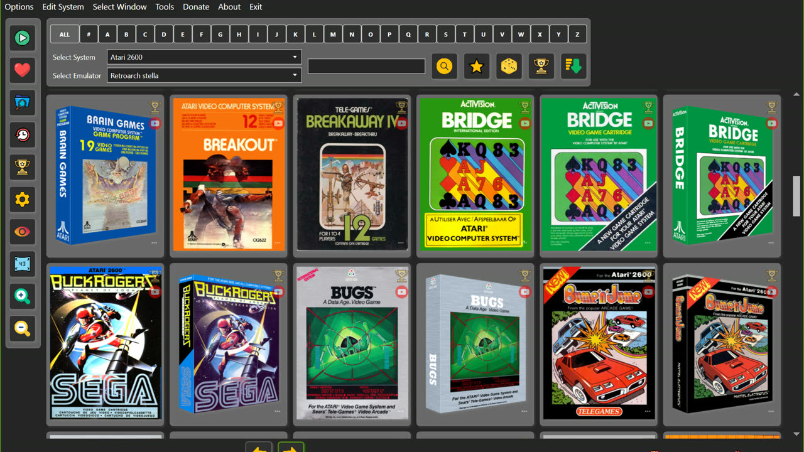
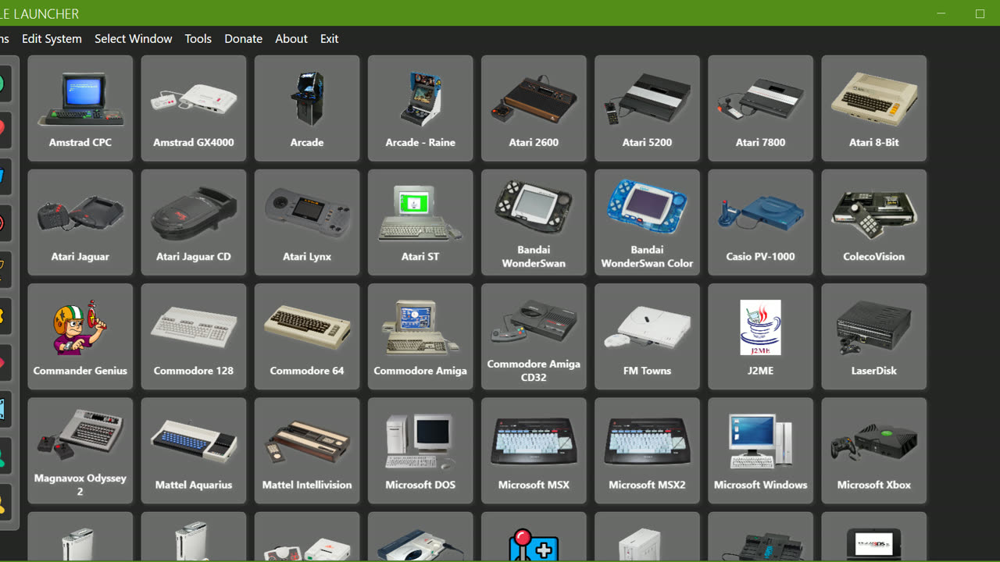
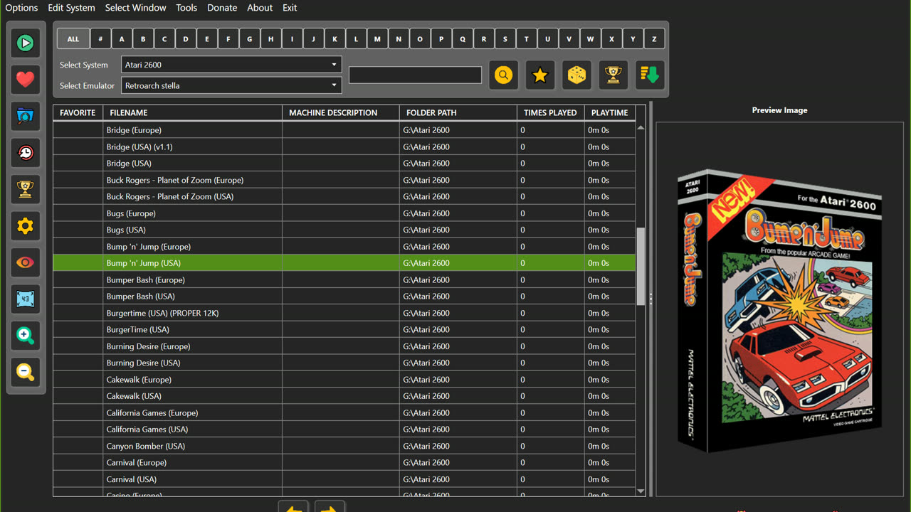
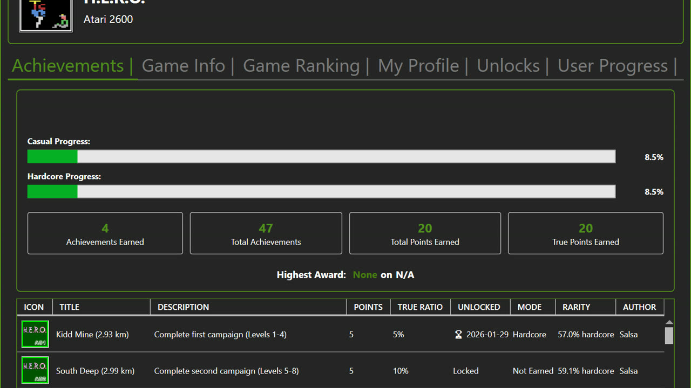

One-click Easy Mode
Pick a system and Simple Launcher downloads the emulator, the core and an optional image pack. Expert Mode is there when you want to tune everything by hand.
Free & open source · GPLv3
Simple Launcher organizes your ROMs, downloads and configures the emulators with Easy Mode, and puts your games, PC store titles (on Windows) and RetroAchievements in one clean library.
Detecting your platform…

RetroAchievements built in Easy Mode20-second tour
No RetroArch cores to assemble, no emulator paths to guess. This is the flow.
Why Simple Launcher
Pick a system and Simple Launcher downloads the emulator, the core and an optional image pack. Expert Mode is there when you want to tune everything by hand.
Browse profiles, filter games by hash, and see achievements without leaving the launcher. On Windows it also signs supported emulators in automatically.
The same Avalonia app runs natively on Windows x64/ARM64, Linux x64/ARM64 and Apple Silicon. Your data stays in the portable settings.dat.
A closer look
Grid or list, gamepad or mouse and keyboard, 100 systems or 10,000 games.



Download
Free, open source, no account. The recommended download is picked from your platform; the main options are below.
The Windows installer installs per user and downloads the .NET 11 Desktop Runtime only when it is missing. Windows portable ZIPs and the Linux portable tar.gz/ZIP need the runtime already installed. Linux AppImage/Flatpak and the macOS DMG include it. The macOS build is unsigned: on first launch, right-click the app and choose Open.
FAQ
No. Simple Launcher does not provide games, ROMs or BIOS files. Easy Mode can download emulators, cores and image packs, but you bring your own legally obtained game files.
The Windows installer downloads the .NET 11 Desktop Runtime when it is missing (administrator approval is needed for that step only). The portable ZIPs and the Linux portable tar.gz/ZIP need the runtime already installed. Linux AppImage/Flatpak and the macOS DMG bundle it.
Yes. Simple Launcher is free software under the GPLv3, with no ads and no account.
No. The Windows uninstaller removes the program files but keeps settings.dat, system.xml, logs and game media. To remove everything, delete the install folder (default %LocalAppData%\SimpleLauncher) after uninstalling.
Yes. Use the Linux AppImage or the Flatpak. Flatpak launches emulators on the host through flatpak-spawn, but FUSE-based image mounting is unavailable inside the sandbox.
Read the full FAQ · Compare with LaunchBox, ES-DE, RetroBat and Playnite